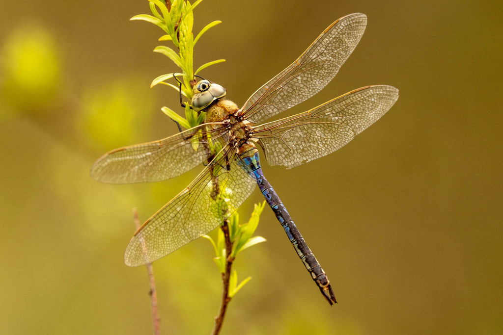

Mosquito Control Through Predation#
In this lesson, we’ll be discussing why we’re looking at the predation of mosquitoes.
Earlier in the textbook, we discussed why we’re researching mosquitos. They are considered to be the world’s deadliest vector of disease, and the transmission of vector-borne pathogens depends on the population dynamic of mosquitos. Monitoring predation is incredibly important to tracking mosquito population, since it can control pathogen prevalence by eliminating the source.
Understanding Mosquito Predation#
In absence of predation, disease pathogens become more prevalent within an ecosystem since mosquitos are able to reproduce without as many limitations. Predation on disease vectors causes the pathogen prevalence to decline and drastically slows the initial spread of the pathogen. It’s important to study diseases within the context of a larger ecological community, since there are many factors that contribute to abundance of a pathogen. An area may be full of places for mosquitos to lay their eggs, the climate may be perfectly suited for them to reproduce, but predators are the limiting factor to their population growth.
Predators have even been introduced in areas as biological control agents for diseases like malaria, dengue fever, and Lyme disease, using organisms ranging from fish to fungus. Understanding the importance of predator-prey dynamics is essential to targeted mosquito elimination efforts. Again, focusing on small and geographically limited networks allow research to be done on specific pathogens.
For our efforts here at EMERGE, we’ll start by tracking five main predator types across the state of Florida. We’ll be overlaying iNaturalist Data alongside our Globe Observer data to see different mosquito ecosystems and their interactions with prey species.
American Robin#

American Robins (Turdus migratorius) have a complicated relationship with mosquitos and West Nile Virus. They have a wide range across North America. They eat mosquitos alongside other insects, making up about 40% of their diet. They are also hosts for mosquito-borne illness, a primary host for West Nile Virus. Mosquitos disproportionately feed on the American Robin. They maintain a high ratio of virus particles versus blood particles in their own blood, with many birds still being asymptomatic despite carrying the disease. When robins disperse at the end of their breeding season in July, mosquitos begin finding more human blood meals. Monitoring American Robins alongside mosquitos is important to keeping pathogens under control.
Southeastern Bat#

Southeastern Bats (Myotis austroriparius) are the species most likely to eat mosquitos in the state of Florida, they’ve been reported to consume more mosquitos than any other bat in any other state. They range from southern Illinois & Indiana to East Texas & the Gulf Coast. A Florida colony of 30,000 of these bats consumed over 15 tons of mosquitoes annually, these large numbers can be attributed to both animals being active at night. When mosquitos are abundant, bats are found to eat a large numbers in a single meal since they do not take evasive action and are easy to capture.
Eastern Mosquitofish#

The Eastern Mosquitofish (Gambusia holbrooki) ranges from New Jersey to Southern Alabama and is common in the state of Florida. They’re found on the surface and edges of ponds, lakes, backwaters, canals, and sluggish streams. They’re a very tolerant species, surviving in stagnant pools and large puddles, making them exceptional for mosquito control. They can be stocked into artificial containers, rain barrels, water buckets, planters, etc. Adult mosquitofish can consume up to 100 larvae a day.
Eastern Pondhawk#

The Eastern Pondhawk (Erythemis simplicicollis) can control mosquito populations both in the larval and adult stages. The range of the Pondhawk is incredibly large, from southern Canada down to Central America as far as Costa Rica. Their main prey is mosquitoes, often males are located at the edge of ponds, lakes, and other bodies of warm and still water while females tend to venture out more into grassy areas. Nymphs will eat mosquito larvae right after hatching.
Common Green Darner#

The Common Green Darner (Anax junius) is another predator of mosquitos, earning the nickname “Mosquito Hawks”. They are the largest and most abundant dragonfly in North America with a range from North to Central America. Similarly to the Eastern Pondhawk, they also eat mosquitoes as larvae and adults with similar habitats.
Sources